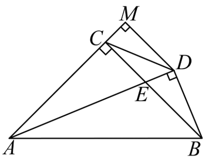
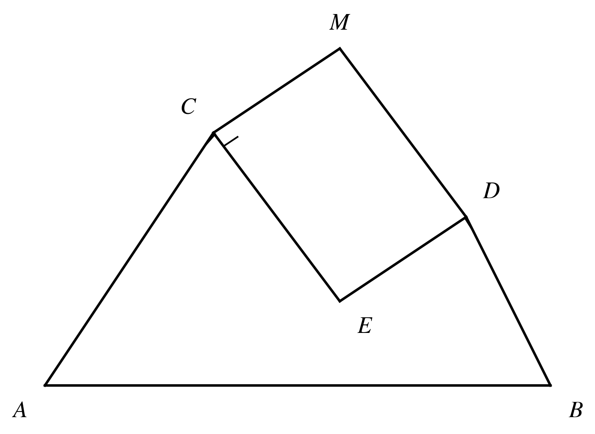

| 任务原图名称 | 原图 (Original) | 生成图 (Generated) | 运行状态 & 代码 |
|---|---|---|---|
| test_image.png |  |
 |
查看 Python 源码import matplotlib.pyplot as plt
import numpy as np
# 设置字体和数学公式样式
plt.rcParams['mathtext.fontset'] = 'stix'
plt.rcParams['font.family'] = 'serif'
# 创建图形
fig, ax = plt.subplots(figsize=(6, 4))
# 定义点的坐标
A = (0, 0)
B = (6, 0)
C = (2, 3)
D = (5, 2)
M = (3.5, 4)
E = (3.5, 1)
# 绘制三角形和辅助线
ax.plot([A[0], B[0]], [A[1], B[1]], 'k-', lw=1.5) # AB
ax.plot([A[0], C[0]], [A[1], C[1]], 'k-', lw=1.5) # AC
ax.plot([B[0], D[0]], [B[1], D[1]], 'k-', lw=1.5) # BD
ax.plot([C[0], M[0]], [C[1], M[1]], 'k-', lw=1.5) # CM
ax.plot([D[0], M[0]], [D[1], M[1]], 'k-', lw=1.5) # DM
ax.plot([C[0], E[0]], [C[1], E[1]], 'k-', lw=1.5) # CE
ax.plot([D[0], E[0]], [D[1], E[1]], 'k-', lw=1.5) # DE
# 标注点
ax.text(A[0] - 0.3, A[1] - 0.3, r'$A$', fontsize=14, ha='center', va='center')
ax.text(B[0] + 0.3, B[1] - 0.3, r'$B$', fontsize=14, ha='center', va='center')
ax.text(C[0] - 0.3, C[1] + 0.3, r'$C$', fontsize=14, ha='center', va='center')
ax.text(D[0] + 0.3, D[1] + 0.3, r'$D$', fontsize=14, ha='center', va='center')
ax.text(M[0], M[1] + 0.3, r'$M$', fontsize=14, ha='center', va='center')
ax.text(E[0] + 0.3, E[1] - 0.3, r'$E$', fontsize=14, ha='center', va='center')
# 绘制直角符号
def draw_right_angle(ax, p1, p2, p3, size=0.2):
"""绘制直角符号"""
dx1, dy1 = p2[0] - p1[0], p2[1] - p1[1]
dx2, dy2 = p3[0] - p2[0], p3[1] - p2[1]
norm1 = np.sqrt(dx1**2 + dy1**2)
norm2 = np.sqrt(dx2**2 + dy2**2)
dx1, dy1 = dx1 / norm1 * size, dy1 / norm1 * size
dx2, dy2 = dx2 / norm2 * size, dy2 / norm2 * size
ax.plot([p1[0] + dx1, p1[0] + dx1 + dx2],
[p1[1] + dy1, p1[1] + dy1 + dy2], 'k-', lw=1)
draw_right_angle(ax, C, A, M)
draw_right_angle(ax, D, B, M)
draw_right_angle(ax, C, E, D)
# 设置比例和隐藏坐标轴
ax.set_aspect('equal')
ax.axis('off')
# 保存图像
plt.savefig('question.png', dpi=300, bbox_inches='tight')
|